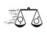

|
|
کمپین یک میلیون امضاء برندۀ جایزۀ سیمون دو بووار
جمعه20 دی 1387

رادیو فرانسه - جایزه سیمون دو بووار دو سال است که در روز نهم ژانویه، روز سالگرد تولد این نویسندۀ بزرگ فرانسوی و نظریه پرداز دفاع از حقوق زنان، به یک شخصیت یا نهادی که در راه دفاع از حقوق زنان تلاش می کند اهدا می شود.
خانم جولیا کریستوا ، نویسنده و روانکاو معروف فرانسوی که بنیانگذار و رئیس هیأت داوران این جایزه است
در گفتگویی با رادیوی ما در بارۀ جایزۀ امسال گفته است:
"سیمون دو بوار دنبالۀ مبارزۀ زنان را که دو قرن است ادامه دارد در دست گرفت . سیمون دو بوار با کتابش "جنس دوم"، که شهرتی جهانی دارد، انقلابی در این جنبش بوجود آورد. هیات داوران این جایزه که حدود بیست شخصیت جهانی را در برمی گیرد و چندین زن و مرد نویسنده، جامعه شناس، فیلسوف، روزنامه نگار و سیاستمدار در آن شرکت دارند امسال خواسته اند بر این نکته انگشت بگذارند که مبارزه برای حقوق زنان تنها مسئلۀ زنان فرانسوی، اروپایی و غربی نیست بلکه زنان را در تقریباً سراسر جهان به خود جلب کرده است. سال گذشته این چایزه به تسلیمه نسرین که تحت تعقیب و آزار است داده شد.امسال ما سخت تحت تأثیر جسارت زنان ایرانی و بدیع بودن شکل مبارزه اشان قرار گرفتیم. این جنبش کار مهمی را در جهت توضیح معنا و ماهیت حقوق بشر و حقوق زنان به خود زنان انجام می دهدو آن ها را تشویق می کند که علیه تضعیقات مبارزه کنند. کمپین یک میلیون امضاء جنبش بدیع و تازه ایست چون بر محور یک زن پیشرو و مشهور شکل نگرفته است بلکه جنبش وسیع است زیرا زنانی که در آن فعال هستندبه دیدار زنان دیگر می روند، با آن ها بحث می کنند ، خانه به خانه سر می زنند و حقوق زنان را تک به تک به آن ها توضیح می دهند. از این طریق و از راه اینترنت یک شبکۀ وسیع فکری بوجود می آورند که همنوع زنی را ، از اقشار کم درآمد گرفته تا زنان مرفه، در بر می گیرد و این دقیقاً با روح کار سیمون دو بووار همخوانی دارد. ما با اهدای این جایزه می خواهیم این زنان را تشویق کنیم و علاقه ، عشق و همبستگی خود را به آنها نشان دهیم".